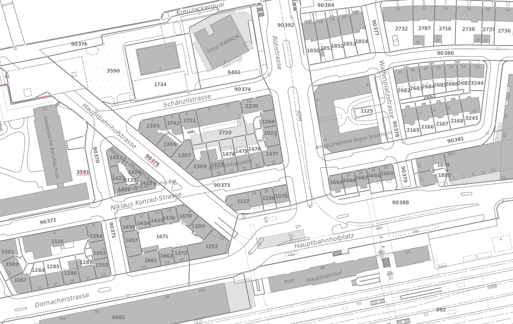

Stefan Ziegler—Amt für Geoinformation Kanton Solothurn
Stefan Ziegler—Amt für Geoinformation Kanton Solothurn
http://www.fubar.ch/wms/grundbuchplan?REQUEST=GetPrint&...&TEMPLATE=A4, hoch&map0:scale=250&gemeinde=Balsthal&anschrift=BSB + Partner, Ingenieure- und Planer AG, Von Roll-Strasse 29, 4702 Oensingen&...